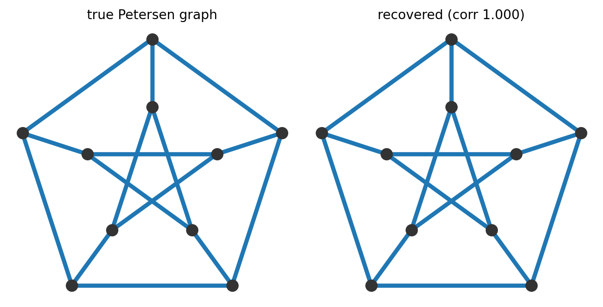

연구 ▷ HST ▷ snow distance로 그래프를 되찾을 수 있을까 — Snow Inversion
Author
소미
Published
May 24, 2026
HST의 snow distance는 시간이 흐를수록(\(t\to\infty\)) 노드 쌍마다 어떤 극한값으로 수렴한다. balanced regime에서 그 극한은 두 노드의 높이 fluctuation \(\delta_i, \delta_j\)의 평균제곱거리 \(c_{ij}=\mathbb{E}_\pi[(\delta_i-\delta_j)^2]\)다. 자연스러운 역질문이 하나 떠오른다 — 이 거리 행렬 \(\mathbf{C}=[c_{ij}]\)만 손에 쥐고, 원래 그래프를 거꾸로 되찾을 수 있을까? 연구팀(연)이 정리한 Snow Inversion이 여기에 정확한 답을 준다. 핵심 도구는 고전 다차원척도법(MDS)의 double-centering 하나다.
어떤 행렬 \(\mathbf{C}\)가 벡터들의 제곱거리, 즉 \(c_{ij}=\|\zeta_i-\zeta_j\|^2\) 꼴이면, 가운데를 빼는 연산 \(-\tfrac12\mathbf{J}\mathbf{C}\mathbf{J}\) (여기서 \(\mathbf{J}=\mathbf{I}-\tfrac1n\mathbf{1}\mathbf{1}^\top\)는 centering 사영)가 그 벡터들의 Gram 행렬 \(\langle\zeta_i,\zeta_j\rangle\)을 정확히 되살린다. 이것이 Gower의 double-centering 항등식이다. HST의 \(c_{ij}\)는 \(L^2(\pi)\) 안의 fluctuation \(\delta_i\)의 제곱거리라, \(-\tfrac12\mathbf{J}\mathbf{C}\mathbf{J}=\boldsymbol{\Sigma}\) (정상 상태 공분산)가 무조건 성립한다. 그래프 구조에 대한 어떤 가정도 필요 없다.
작은 path 그래프 \(P_5\)로 직접 확인해 보자. 저항거리 행렬 \(\mathbf{R}\)이 제곱거리 행렬의 역할을 한다(\(P_5\)에서는 \(R_{ij}=|i-j|\)로 깔끔하다).
import numpy as np# P_5 path LaplacianN =5W = np.zeros((N, N))for i inrange(N -1): W[i, i +1] = W[i +1, i] =1.0L = np.diag(W.sum(1)) - W# 저항거리 행렬 R (제곱거리 행렬)Lp = np.linalg.pinv(L)d = np.diag(Lp)R = d[:, None] + d[None, :] -2* Lpprint("저항거리 행렬 R (제곱거리):")print(R)
이제 double-centering으로 Gram을 복원하고, 거기에 한 단계만 더 얹으면 그래프가 통째로 돌아온다. 만약 이 Gram \(\boldsymbol{\Sigma}\)가 Laplacian의 유사역행렬에 비례하면 — \(\boldsymbol{\Sigma}=\kappa\,\mathbf{L}^{+}\), 이것이 연구팀 Part-2에서 “resistance form”이라 부르는 조건이다 — 유사역행렬은 대칭행렬에서 involution(두 번 취하면 제자리)이므로 \(\mathrm{pinv}(\boldsymbol{\Sigma})=\tfrac1\kappa\mathbf{L}\)이 된다. 즉 그래프 Laplacian을 global scale \(\kappa\)만 빼고 정확히 복원한다. Laplacian의 비대각 성분이 곧 (부호 반전된) 인접행렬이므로, 어느 쌍이 간선인지와 상대 가중치가 그대로 읽힌다.
오차가 \(10^{-15}\) 수준 — 기계 정밀도다. 거리행렬에서 출발해 그래프를 정확히 되돌렸다. 이 방법은 spectral 방법과 달리 고윳값 중복(multiplicity) 장애가 없다 — 개별 고윳값이 아니라 행렬 \(\mathbf{L}\) 자체를 복원하므로, 고윳값이 겹치는 대칭 그래프(\(K_n\), vertex-transitive)에서도 똑같이 깨끗하게 작동한다. 대표적 대칭 그래프인 3-정칙 Petersen 그래프로 확인해 보자.
import matplotlib.pyplot as pltdef petersen(): W = np.zeros((10, 10))for i inrange(5): W[i, (i +1) %5] = W[(i +1) %5, i] =1.0# 바깥 오각형 W[5+ i, 5+ (i +2) %5] = W[5+ (i +2) %5, 5+ i] =1.0# 안쪽 오각성 W[i, 5+ i] = W[5+ i, i] =1.0# 살(spoke)return WWp = petersen()Lp = np.diag(Wp.sum(1)) - WpLpi = np.linalg.pinv(Lp); dp = np.diag(Lpi)Rp = dp[:, None] + dp[None, :] -2* LpiJp = np.eye(10) - np.ones((10, 10)) /10Lp_rec = np.linalg.pinv(-0.5* Jp @ Rp @ Jp)Arec =-(Lp_rec - np.diag(np.diag(Lp_rec))); Arec /= Arec.max()iu = np.triu_indices(10, 1)corr = np.corrcoef(Wp[iu], Arec[iu])[0, 1]# Petersen 표준 layout (바깥 오각형 + 안쪽 오각성)ang = np.pi /2+2* np.pi * np.arange(5) /5pos = np.vstack([np.c_[np.cos(ang), np.sin(ang)],0.5* np.c_[np.cos(ang), np.sin(ang)]])fig, ax = plt.subplots(1, 2, figsize=(6.5, 3.3))for k, (Amat, title) inenumerate([(Wp, "true Petersen graph"), (Arec, rf"recovered (corr {corr:.3f})")]):for i inrange(10):for j inrange(i +1, 10): w = Amat[i, j]if w >0.08: # 복원 weight 가 큰 간선만 (non-edge ≈ 0 은 그리지 않음) ax[k].plot([pos[i, 0], pos[j, 0]], [pos[i, 1], pos[j, 1]],"-", color="C0", lw=0.6+2.6* w, alpha=min(1, 0.35+0.65* w)) ax[k].scatter(pos[:, 0], pos[:, 1], s=70, c="0.2", zorder=3) ax[k].set_title(title, fontsize=10); ax[k].set_aspect("equal"); ax[k].axis("off")plt.tight_layout(); plt.show()

왼쪽이 실제 Petersen 그래프(바깥 오각형 + 안쪽 오각성 + 살, 간선 15개)이고, 오른쪽은 거리행렬만으로 복원한 간선이다 — 간선 두께를 복원된 가중치로 줬는데, 실제 간선만 굵게 살아나고 나머지 노드 쌍은 가중치가 0에 가까워 그려지지 않는다. 즉 그래프 모양이 그대로 되살아난다(상관 \(\approx 1\)). 연구팀 실험에서는 한 걸음 더 나아가, 그래프를 모르는 채 HST를 앙상블로 돌려 얻은 snow distance만으로 복원을 시도했고, Petersen 그래프에서 상관 \(0.998\), \(C_{20}\)에서 \(0.850\)을 얻었다.
복원한 Laplacian은 그 자체로 끝이 아니라 실용 도구가 된다. 응용 하나를 보자 — ring 위에 신호가 놓여 있는데 일부 노드의 관측값이 빠진(missing) 상황을, 복원한 그래프 구조로 메우는(imputation) 것이다. ring \(C_{40}\) 위에 저주파 sinusoid(모드 2와 3을 섞은) 신호를 깔고 관측 noise를 더한 뒤, 12개 노드를 가린다. sinusoid는 Laplacian의 저주파 모드라 graph smoothness로 잘 메워진다 — 관측값에 맞추면서 \(f^\top \mathbf{L} f\)(매끄러움)를 작게 하는 graph Tikhonov 해 \((\mathbf{M}+\gamma\mathbf{L})f=\mathbf{M}y\)를 쓴다(\(\mathbf{M}\)은 관측 노드 마스크).
가려진 12개 노드(회색 ✕)의 값을 관측값(파란 점)과 복원한 그래프 구조만으로 추정한 결과(빨간 ■)가 참값을 잘 따라간다. sinusoid가 그래프의 저주파 모드라 Laplacian smoothness가 효과적으로 작동한 것이다.
이 모든 것의 핵심은 복원이 가능한 조건에 있다. Snow Inversion이 성립할 필요충분조건은 정상 공분산이 Laplacian 유사역행렬에 비례한다는 것(\(\mathrm{Cov}_\pi(\delta)\propto\mathbf{L}^{+}\)), 바로 Part-2가 남겨둔 commute/resistance 닫힌형식이다. 즉 “거리에서 그래프 복원”이라는 어려워 보이는 역문제가 이미 알려진 한 가지 질문으로 정확히 환원되고, 동시에 복원 품질 자체가 그 resistance form이 얼마나 잘 성립하는지를 재는 수치 진단이 된다. 다만 이 전개는 balanced regime에 한정된다 — drift가 있는 경우(\(\rho_i\ne\rho_j\)) 평균항 \((\mathbb{E}_\pi\delta_i-\mathbb{E}_\pi\delta_j)^2\)이 centering으로 사라지지 않아 별도 취급이 필요하다.
원문(연구팀, working draft v0.1)은 아래 PDF에 정리되어 있다. 정리·증명·수치 검증의 전체 전개를 참고할 수 있다.